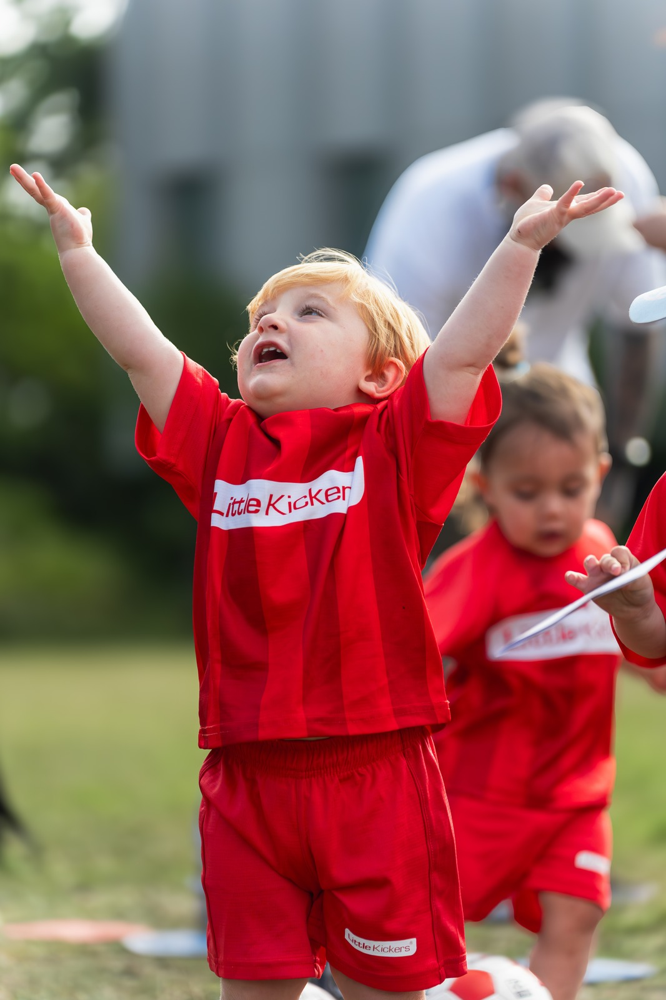
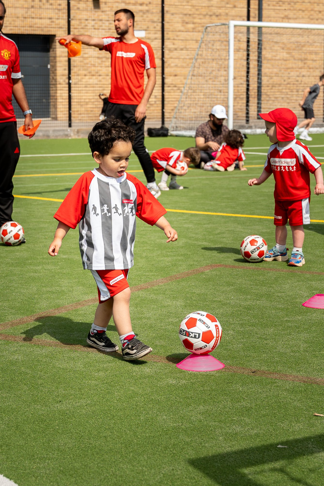
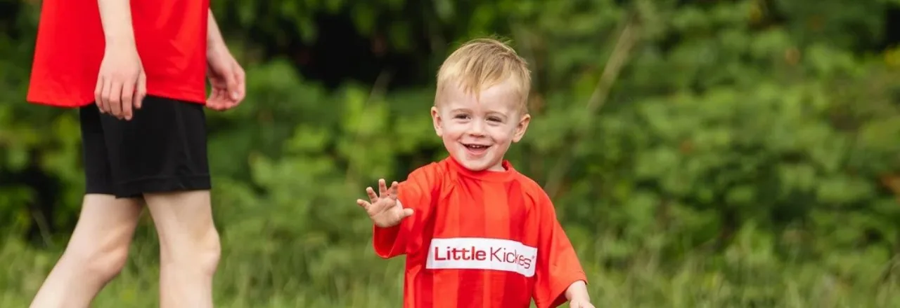
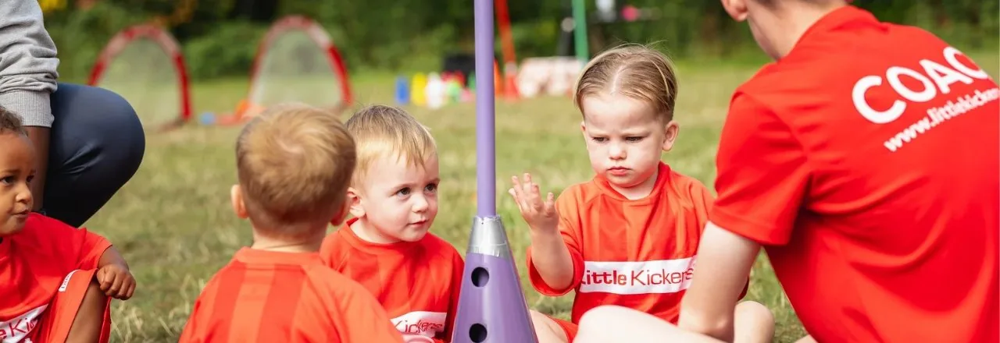
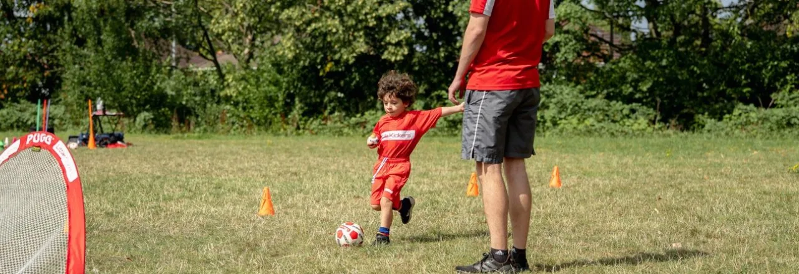
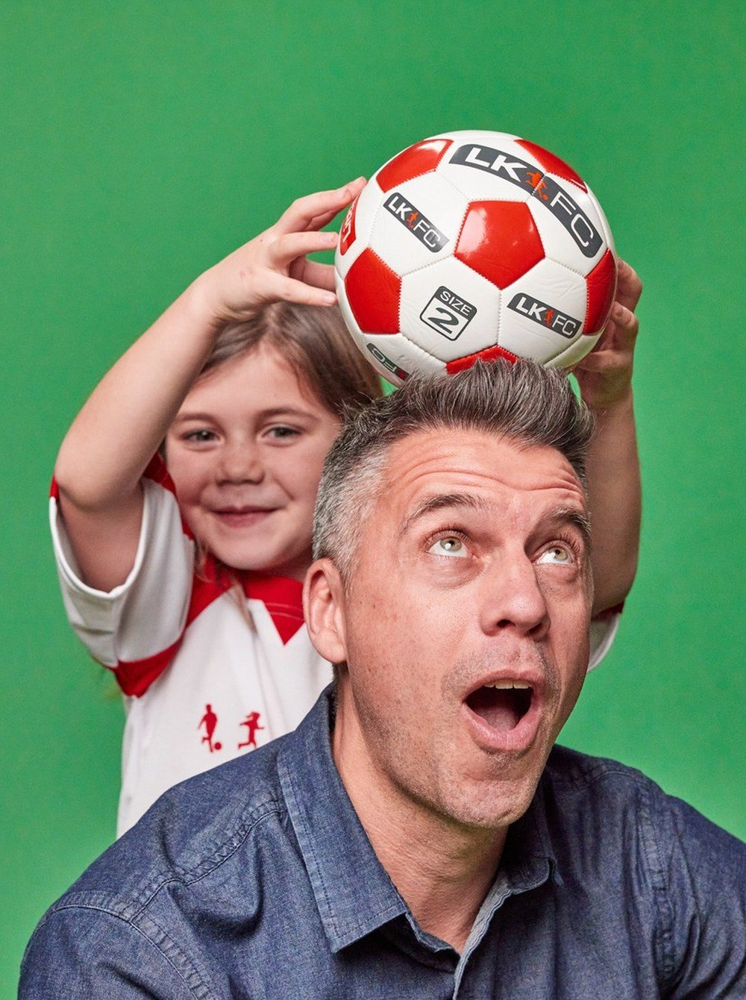
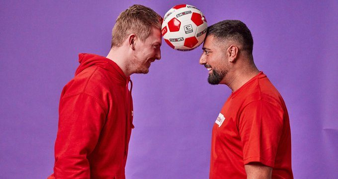
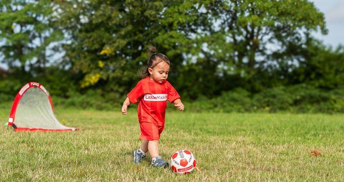
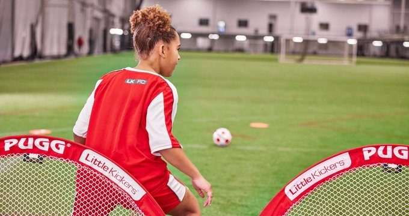

Clases de Fútbol para niños y niñas de 18 meses a 7 años en Interlomas, Santa Fe, Cuajimalpa y Chapultepec. Un método diseñado para que aprender sea parte del juego.


Cuatro sedes para que siempre tengas una opción cerca.
Cuatro programas diseñados por especialistas en desarrollo infantil y fútbol.



Creemos que los niños pequeños aprenden mejor cuando se divierten. Cada sesión está diseñada para ser positiva, sin presión y centrada en el desarrollo real del niño.
Una metodología diseñada para que aprender sea parte del juego.

Estructura probada que mantiene a los niños motivados de principio a fin.
* El tiempo de las clases puede variar dependiendo la edad de los pequeños.
No es solo fútbol. Es sobre el niño que crece dentro y fuera de la cancha.



Una sesión completa, gratis, sin compromiso. Ven a ver cómo Little Kickers transforma la cancha en el mejor salón de clases.